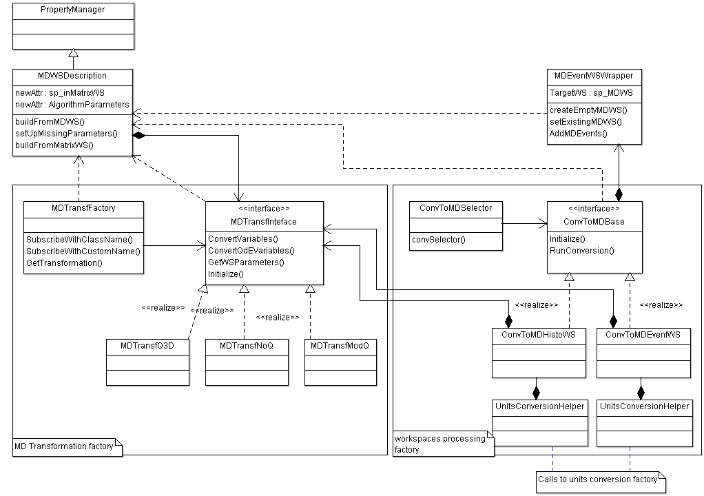

Writing a Custom ConvertToMD Transformation#
Introduction#
This information is intended for a developer who needs to write a customized ConvertToMD class (plugin). The plugin then becomes automatically available to use in the ConvertToMD algorithm.
As the MD transformation factory is similar to the Dynamic Factory
used for converting Units, the
procedure of writing a custom ConvertToMD transformation is very similar to adding a new unit to use
with ConvertUnits algorithm
or writing a new algorithm to use with Mantid.
The plugin interface deals with the task of converting a generic n-dimensional point of a MatrixWorkspace
into a generic m-dimensional point of an MDWorkspace using the necessary parameters.
Examples of such transformations could be a conversion of signal and error at detector num at specific time of flight plus log values for temperature and pressure (The instrument’s space: 4 numbers + information about the detector) into 6-D point in the Physical space qx,qy,qz,dE,T,P (qx,qy,qz – the components of momentum transfer) or into 3-D point in Physical space |Q|,dE,Fugacity (|Q| - modulus of momentum transfer).
Writing a simple custom plugin#
Summary#
If a single point of a MatrixWorkspace together with correspondent log files can be converted into a single
MDEvent (multidimensional point of MD workspace), a simple custom plugin can be written to do this transformation.
The existing framework in this case deals with all other tasks, namely the iterations over source workspace,
conversion of the workspace units into the units of the conversion formula, defining the target workspace,
constructing MDEvent instances and adding these events to the MDWorkspace.
A ConvertToMD plugin implements MDTransfInterface, so to write a plugin you must write a class
which inherits from this interface and register this class with MDTransfFactory. The macro to
register the class with the factory is similar to the macro used to register an algorithm with
Mantid or a Unit class with the Unit conversion factory. The macro is located in MDTransfFactory.h.
The class inheriting from MDTransfInterface performs two tasks:
Define the target
MDWorkspaceand its dimensions (both the number of dimensions and the dimension units).Initialize the transformation and define a formula to transform a single point of input data into output data.
These two tasks are mainly independent, but implemented within a single class to be handled by the single dynamic factory.
Note that the functions which define the target MDWorkspace are called before the MDTransfFactory initialize function.
The initialize function accepts the MDWorkspace description and is expected to fully define all class variables used during
the transformation from a point of a MatrixWorkspace into an MD point of a target MDWorkspace.
Workflow#
This workflow is implemented in the ConvertToMD algorithm’s exec() function.
Select a conversion and obtain additional algorithm parameters from the algorithm interface.
Build
MDWorkspacedescription (callMDTransfFactoryand ask for the conversion plugin parameters).Build new
MDWorkspaceon the basis of its description (if new workspace is requested or check if existing workspace is suitable).Initialize the conversion plugin (using
MDWSDescription).Run the conversion itself by looping over detectors and their values (use
MDTransfFactoryand selected conversion plugin to convert each input point into output MD point).
The MDTransformationFactory is deployed twice during the conversion. The methods used during each conversion stage are clearly
specified in MDTransformationInterface.h.
Defining the target workspace#
This describes steps 1-3 of the workflow.
The input data at this stage are the name of the plugin and the outputs – the information necessary for the transformation to work including the number of output dimensions, units for the selected physical transformation formula, units of the target workspace, etc.
The methods used while defining the workspace should not access or change anything accessed through this pointer of
the custom plugin. The result of the first stage is a MDWSDescription class, which can be considered
as a large XML string that provides a common interface to different data obtained from the algorithm’s parameters.
Any data users want to transfer to the custom plugin can be added to this class, as long as this does not lead to
excessive memory usage or overhead.
The MDWSDescription class is copy constructable and assignable and if these operators fail due to the changes
to the class, custom copy constructor and assignment operators have to be defined.
Doing the transformation#
This describes steps 4-5 of the workflow.
The input data at this stage are points of the “Experimental Space”, e.g. coordinates of points in the input workspace and additional information about these points, e.g. detectors coordinates and log files for values of interest. The output values are the vectors of the coordinates of the selected points in the space of interest and (possibly) modified/corrected values of the signal and error at this point.
During the second stage of the transformation, the algorithm calculates the multidimensional coordinates of MD points in the target workspace, places these coordinates into an MD vector of coordinates and modifies the neutron signal/error if necessary (e.g. Lorentz corrections). This stage can be best described by the pseudo-code below. It describes performing the conversion over the whole workspace:
/** initialize all internal variables used for transformation of workspace into MD workspace
WorkspaceDescription -- the workspace description obtained on the first stage of the transformation */
plugin->initialize(WorkspaceDescription);
/** calculate generic variables, which are usually placed in logs and do not depend on detectors positions
or neutron counts (e.g. temperature) and place these values into proper position in the coordinates vector. */
if(!plugin->calcGenericVariables(std::vector<coord_t> &Coord, size_t N_Dimensions))
return; // finish if these data are out of range requested
for(i in array of detectors)
{
/** Here we calculate all MD coordinates which depend on detectors position only. The plugin also
changes the internal plugin values which depend on detector's position e.g. sets up the unit conversion */
if(!plugin->calcYDepCoordinates(std::vector<coord_t> &Coord,size_t i))
continue; // skip detector if these data are out of range requested
/** obtain signal and error, array, corresponding to the i-th detector */
spectra[i] = InputWorkspace->getSpectraCorrespondingToTheDetector(size_t i);
/**Convert units into the units, requested by the plugin */
MantidVector X = convertUnits(spectra[i].X_coordinates);
for(j in spectra[i])
{
Signal = spectra[i].Signal[j];
Error = spectra[i].Error[j];
/**Calculate remaining MD coordinates and put them into vector of coordinates.
Modify Signal and error if the signal and error depends on Coord */
plugin->calcMatrixCoordinates(const MantidVec& X, size_t i, size_t j,
std::vector<coord_t> &Coord, Signal, Error);
/**Convert Coord signal and error to MD event with coordinate Coord and add the MDEvent to MD workspace*/
AddPointToMDWorkspace(Coord,Signal,Error);
}
}
PreprocessDetectorsToMD with custom plugins#
Unit conversion uses the angular positions and sample-detector distances. This information is usually expensive to calculate so it is calculated separately by the PreprocessDetectorsToMD algorithm. The detector information can be extracted directly from the input workspace, but consider checking the table workspace returned by PreprocessDetectorsToMD and check if the information is already provided there.
PreprocessDetectorsToMD can also be modified to add some additional detector information. This information can then be added to the resulting table workspace and used in the custom plugin. All currently existing plugins use the information about the detector’s positions calculated by PreprocessDetectorsToMD.
Complex Transformations#
It is possible that the approach of converting a single point of a MatrixWorkspace into a single MDEvent is
incorrect or inefficient for what is required. In this situation, more complex changes to the conversion framework
have to be implemented.
To make the changes one needs to understand the interaction between different classes involved in the conversion.
The class diagram with all main classes involved in the conversion is presented below:

Two factories are involved into the conversion. MDTransfFactory deals with different formulae to
transform a single matrix point into an MD point. The other factory (ConvToMDSelector and the algorithm inheriting
from ConvToMDBase) deal with different kinds of workspaces. There are currently two workspaces that can be transformed
into an MDWorkspace, namely EventWorkspace and MatrixWorkspace. ConvToMDSelector identifies which algorithm to
deploy based on the input workspace.
If the input workspace has some special properties (e.g. a workspace obtained for an experiment with a rotating crystal,
which has special units of time of flight with a special time series attached which describe a crystal position),
the ConvToMDSelector should be modified to identify such a workspace and an additional class inheriting from
ConvToMDBase to deal with such workspaces has to be written.
There are two other important classes in the diagram. The first one is MDWSDescription, briefly mentioned above.
The purpose of this class is to collect all input information from the algorithm interface and transfer this information
through the common interface in a way convenient for a plugin to use. The user who is writing his own plugin is expected to
add all the information necessary for the plugin to work to this class.
Another is the MDEventWSWrapper. This class interfaces MDEventWorkspace. The MDEventWorkspace is templated by number
of dimensions and the purpose of MDEventWSWrapper is to provide a unified interface to this workspace regardless of the
number of workspace dimensions calculated during the run. It uses MDEventWorkspace methods for which the
IMDWorkspace interface to the MDEventWorkspace is not efficient. You do not usually need to modify this class unless
you are modifying MDEventWorkspace code.